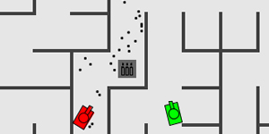
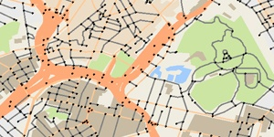
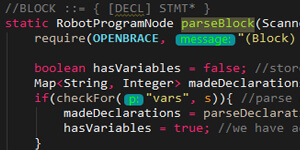
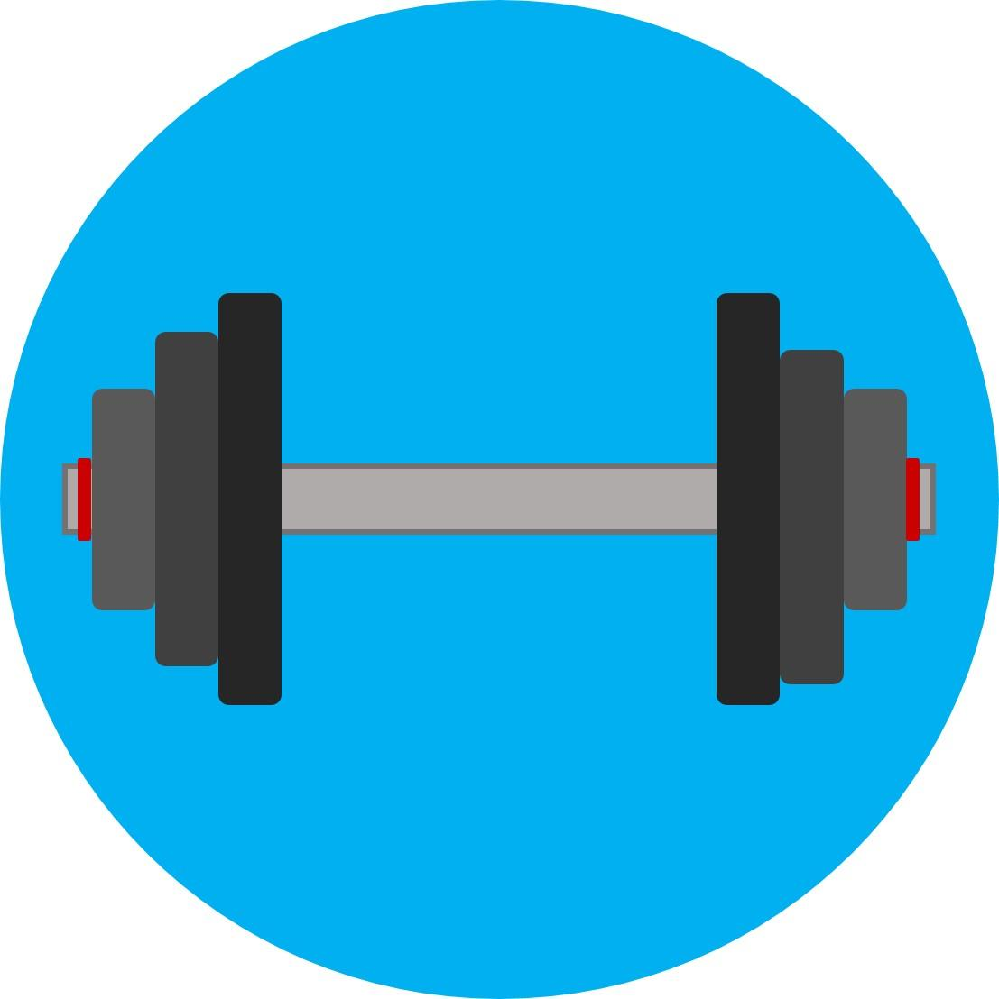

| Skill | Training | Confidence |
| Java | University | Very confident |
| Processing | University | Confident |
| C & C++ | University | Confident |
| UI & Web design | Self Taught | Pretty things |
| Python | University | Kinda |
| HTML | College & Self Taught | Sorta |
| CSS | College & Self Taught | Somewhat |
| PHP | College | Rusty |
| JavaScript & Jquery | College | Google |

TankWars
TankWars was the final assignment for a year one computer graphics paper (CGRA151). We had a lot of freedom to create any 2-D game or digital artwork we desired. TankWars is an imitation of a popular online game called Tank Trouble with slightly different weapons and feeling. It is a good example of my OO code.
QRScanner
QRScanner is a personal project that I started to apply my skills with Java to mobile development in the summer. It uses ZXing to quickly scan many different barcode formats, with QR codes it detects what type it is and presents useful options to the user. For example, contact QR codes are detected with an option to add to your contacts.

Auckland Mapper*
This was the 1st assignment for a year 2 algorithm and data structure course (COMP261). It features many different algorithms and data structures including the following;
- A*
- Articulation point finder
- Directed graph
- Trie
- Quadtree.
3-D Renderer*
This was the 3rd assignment for a year 2 algorithm and data structure course (COMP261). It uses a Z-buffer rendering pipeline to display different 3-D objects with directional Gouraud shading to allow surfaces to appear curved, it can also handle multiple light sources of different colours and positions.

Robot Parser*
This was the 3rd assignment for a year 2 algorithm and data structure course (COMP261). It is a top down recursive parser using the Java scanner to look ahead one token for a battle robot scripting language. It constructs and returns an abstract parse tree which Java uses to execute the script on the robot.
*Limited availability depending on trimester dates.
You may also find this website on GitHub here
Gaming
I love playing games, exploring new worlds, creating new things, getting invested in rich story narratives and playing online with friends. The first game I played was Age of Empires 2 and I haven’t looked back since. Favourite single player game is probably The Witcher 3. Steam user: HackSparrow.
General
I am a full-time second year student studying software engineering at Victoria University with interests in many areas including game development, graphics and AI. I am a very driven individual with a strong academic record. I enjoy almost all areas of software engineering but have had little paid experience to develop my tastes.

Exercise
I usually train about 5 – 6 times a week and enjoy going to the gym with my gym buddy, cycling and running. I also rowed throughout my college years which was an amazing experience and helped me develop many life skills like teamwork, punctuality, dedication and much more.
Contact